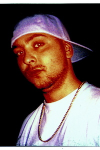

Giovanni Cassano, di origini italo-americane, nasce a Bologna nel 1973.
Amante della cultura hip-hop partecipa a jam session come Zona Dopa-Pescara e Mic Chech a Bologna, al tempo le città più competenti della cultura underground.
Oltre alle varie collaborazioni con il collettivo bolognese Porzione Massiccia Crew, registra alcuni brani con Inoki, rapper bolognese e amico di una vita che tutt'ora lo omaggia durante i suoi live.
Joe muore nel 1999 all'età di 26 anni per una presunta overdose, ma la sua musica non se ne va con lui e supera quell'anno rimanendo iconica ancora oggi.
La firma di Joe Cassano è sicuramente la sua voce nasale, ma anche le sue strofe sono inconfondibili: intrecciate tra italiano ed inglese, le parole sono ben studiate e fanno di lui uno dei rapper più rappresentativi degli anni 90.

Dio lodato è purtroppo l'unico album di Joe Cassano completo e registrato in studio. La possibilità di non lasciarlo incompleto dopo la morte di Joe nasce dal progetto del fratello che, per portare a termine l'album, contatta altri rapper e artisti della scena hip-hop del tempo.
Dal recupero di bozze e barre scritte e registrate, nasce un album reso possibile dall'amore e dalla collaborazione.
Viene pubblicato postumo nel 1999 dalla Portafoglio Lainz.
Dopo aver ascoltato l'album e aver versato qualche lacrima, lasciamo qui di seguito la traccia che non ci esce più dalla tsta: Teach'em Right.
MASSIMO VOLUME
DJ RODRIGUEZ